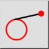
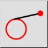
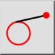
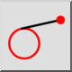

Styczna (punkt, okrąg)
Pasek narzędziowy / ikona:
 

Menu: Rysowanie > Linia > Styczna (punkt, okrąg)
Skrót: L, T, 1
Polecenia: linetangent | tangent | lt1
Jest to tłumaczenie automatyczne.
Pasek narzędziowy / ikona:
 

Menu: Rysowanie > Linia > Styczna (punkt, okrąg)
Skrót: L, T, 1
Polecenia: linetangent | tangent | lt1
Tworzenie stycznych ze współrzędnej do istniejącego łuku, okręgu lub elipsy za pomocą tego narzędzia.